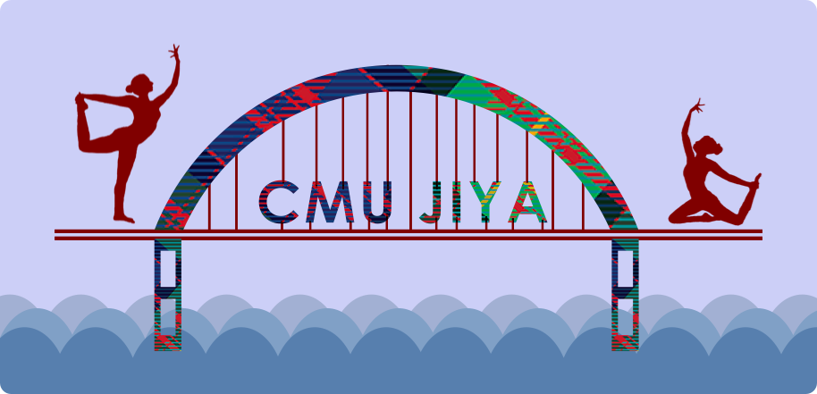
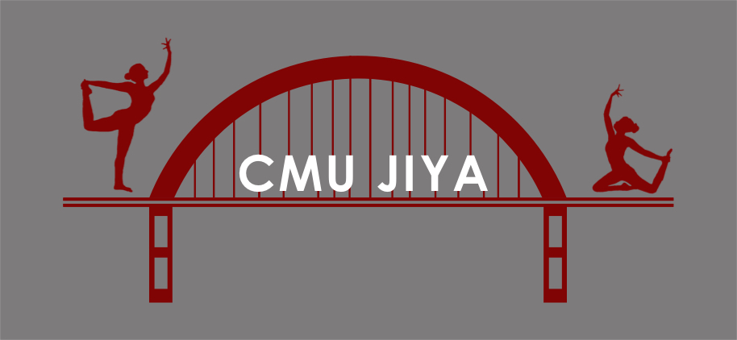
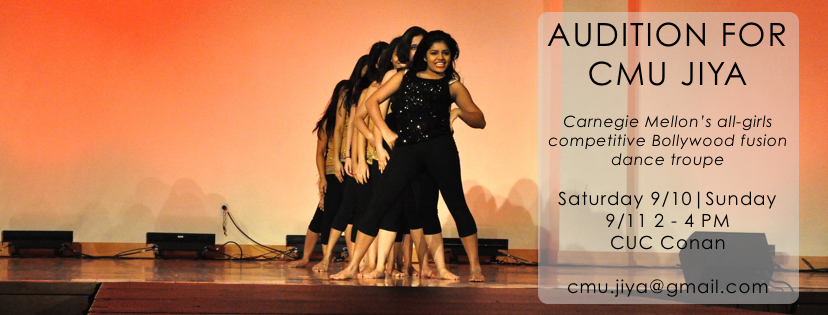
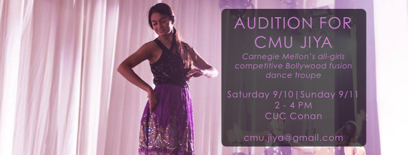

Designs Created for CMU Jiya
Jiya is Carnegie Mellon University's premiere all-girls Bollywood fusion dance team. In addition to being captain, I also serve as the primary designer and maintain the official team website, which can be found here. These are some of the materials I have created for Jiya.
In designing the official logo, I attempted to incorpoate one of Pittsburgh's salient landmarks: the distinctive bridges that cross the three major rivers. I then reconciled this with the spirit of an Indian dance team with the addition of two dancing silhouettes.

Logo used on website and Facebook

Logo used on official team jackets
I also created promotional posters for recruitment using performance photos.

